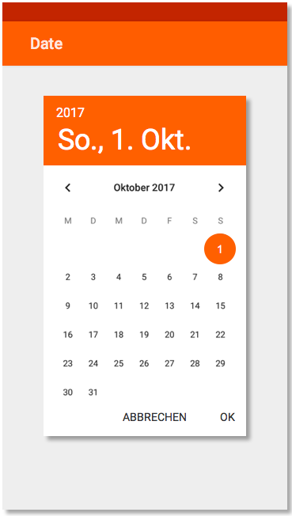
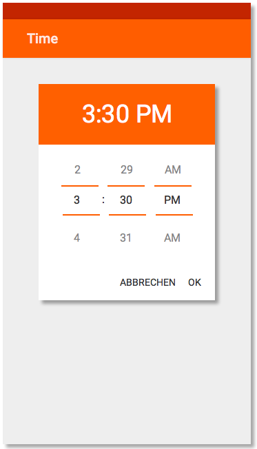

<!--
@license
Copyright (c) 2016 The Polymer Project Authors. All rights reserved.
This code may only be used under the BSD style license found at http://polymer.github.io/LICENSE.txt
The complete set of authors may be found at http://polymer.github.io/AUTHORS.txt
The complete set of contributors may be found at http://polymer.github.io/CONTRIBUTORS.txt
Code distributed by Google as part of the polymer project is also
subject to an additional IP rights grant found at http://polymer.github.io/PATENTS.txt
-->

<link rel="import" href="../bower_components/polymer/polymer-element.html">
<link rel="import" href="shared-styles.html">
<link rel="import" href="../fhws_elements/fhws-header.html">
<link rel="import" href="../fhws_elements/fhws-card.html">           
<link rel="import" href="../fhws_elements/fhws-link.html">
<link rel="import" href="../fhws_elements/fhws-code.html">
<link rel="import" href="../fhws_elements/fhws-collapse.html">
<link rel="import" href="../bower_components/paper-date-picker/paper-date-picker.html">
<link rel="import" href="../bower_components/paper-dialog/paper-dialog.html">
<link rel="import" href="../bower_components/paper-button/paper-button.html">
<link rel="import" href="../fhws_elements/fhws-paper-calendar.html">
<link rel="import" href="../fhws_elements/fhws-paper-yearlist.html">


<dom-module id="fhws-view-picker">
  <template>
    <style include="shared-styles">
      :host {
        display: block;
      }
        
        

 img.displayed
        {
            display:block;
            margin-left:auto;
            margin:auto;
        }

        
    </style>

      <fhws-header header="Date/Time Picker">

  
                      <!--Card #0  -->  
    <fhws-card title="Allgemeine Information" color="white">
		  <div class="card-content">
            
              <p>Zur Auswahl eines Datums und einer Uhrzeit werden Date und Time Picker verwendet. Diese eignen sich insbesondere für die Auswahl eines Datums bzw. einer Uhrzeit in der <b>nahen Zukunft</b>. <br><br>
                  Soll ein <b>weiter zurückliegendes Datum</b>, wie z. B. ein Geburtsdatum, eingegeben werden, wird ein Picker nicht empfohlen. Hierfür eignen sich am besten einfache Input-Felder vom Type „number“ oder „phone“.<br><br>
                  Mehr Informationen zu Pickern findet man im offiziellen <a href="https://material.io/guidelines/components/pickers.html">Material Design-Styleguide</a>.
</p>
           
		  </div><br>
	</fhws-card>
	</div>  
          
          
               <!-- Picker -->  
    <fhws-card title="Date Picker" color="white">
		  <div class="card-content">
             
              <br>
              
        </div><br>
	</fhws-card>
	</div>
    
    <fhws-card title="Time Picker" color="white">
		  <div class="card-content">
         
              <br>
             
        </div><br>
	</fhws-card>
	</div>
             
          <br>
          
  </template>

  <script>
    class FhwsViewPicker extends Polymer.Element {
      static get is() { return 'fhws-view-picker'; }
    }

    window.customElements.define(FhwsViewPicker.is, FhwsViewPicker);
  </script>
</dom-module>
